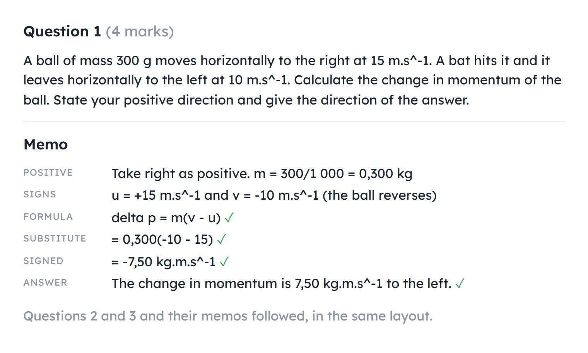

A 20-minute talk for teachers.
Noel Robert, Physical Sciences teacher
·
Press → or Space, or tap the right edge, to move on.
Is it any good?
Two pages on momentum. AI made both. Which would you give your class?
- Momentum = mass × velocity
- Heavier things have more momentum
- Fun fact: a truck has lots of momentum!
- Remember: practice makes perfect!
Mock-up of a typical one-prompt result

Worked example 7.2, coursebook page 142
Decide, then click
Page A looks friendly, but gives pupils nothing to do. Page B was built for my class and my exam.
Is it any good?
Same AI. The difference was the teacher.
- It can make something generic in seconds.
- It does not know your pupils or your exam. You do.
- This talk: getting what you know onto the page.
Will it harm learning?
Pupils practised with a chatbot. Then it was taken away.
Decide, then click
Practice soared. Learning sank. Hints kept the thinking with the pupil.
Source: Bastani and others, 2025, PNAS
Will it harm learning?
Try first. Ask for one hint. Then do one alone.
AI here isn't built to make learning easy. It's built to make good learning hard to avoid.
- 1Attempt it first.
- 2Name where you are stuck.
- 3Ask for one hint.
- 4Check the reply.
- 5Close the AI. Do a new one alone, on paper.
ILLUSTRATION A hint, not an answer.
What makes the output good?
There is no prompt. There is a page of rules: my lens.
What makes the output good?
One test for every page: what must the pupil recall, think about or produce?
Wow 1 · A first job
It took a minute to write. Only I could see what was missing.

- 1It didn't write things the way my class learns them.
- 2It left out what makes my page work: the pictures, the common mistakes.
- 3The wording was off for my class.
It did the typing. I did the judging.
Wow 2 · Moderating my marking REAL SCRIPT, ANONYMISED
My red pen first, then a green moderator's pen. I decide every mark.


- Red: I mark first.
- Green: AI checks my marking.
- I check every green change.
Name and school hidden.
The marks, analysed INVENTED CLASS
Click a bar for more.
An invented class of 24 pupils, one 135-mark paper.
- Whole paper: who needs help first.
- Question by question: what to reteach, not just who.
Esc or × to go back to the script
Wow 3 · The study coach
It asks one question, then hands back the pen.
- 1Says what is right first
- 2Asks one question about the first mistake
- 3Sends them back to paper
A made-up exchange. Tested only with made-up attempts so far, not with classes.
Scaled up
The same lens, at book size and on video.

- I decidedThe rules and the level
- The AIBuilt the pages
- IChecked them
Our own lesson videos. No adverts. Our words.
Is it safe?
AI goes wrong in four ways. So I keep four rules.
What goes wrong
- 1It makes things up
- 2It agrees with you
- 3It can be unfair
- 4It can be out of date
My rules
- ✓Nothing goes live without me
- ✓Pupil data stays in school systems
- ✓Demos use invented data
- ✓Check everything you get
Start Monday
Start small. Here are the words for your first job.

Noel Robert. Free to share. Not for sale, and not to be changed.